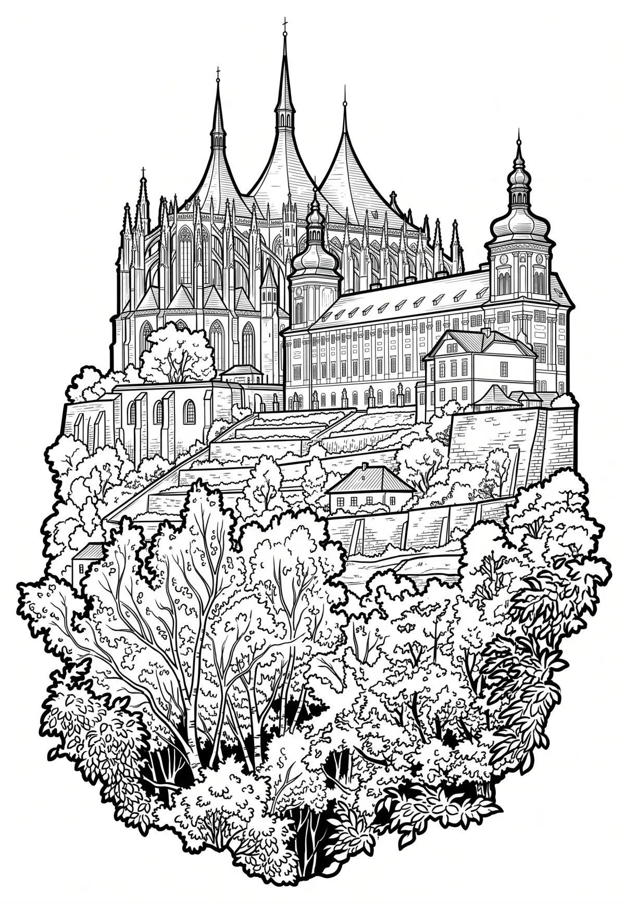

Kutná Hora
Středočeský kraj · 254 m n. m.

město · #037
Kutná Hora je město v okrese Kutná Hora ve Středočeském kraji, obec s rozšířenou působností a městská památková rezervace zapsaná na seznamu světového kulturního dědictví UNESCO. Díky těžbě stříbra vrcholící v 13. až 15. století šlo ve středověku o jedno z nejvýznamnějších českých královských měst.